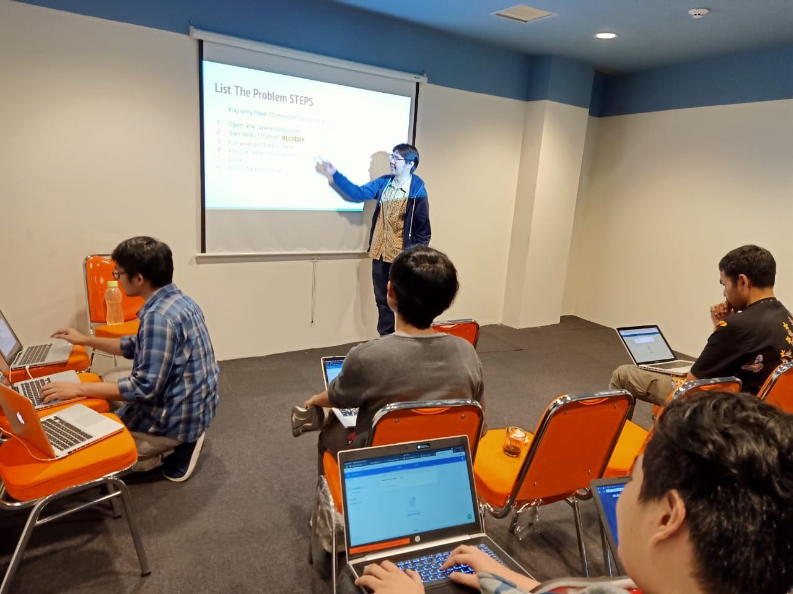

Life as Lead Engineer
Ralali.com - Mar 2019
First team: GRIFFIN, handle initiation of Finance Product.

Ralali moved to Bluegreen Office and had to restructuring Engineering teams. Here's the Website Performance Team.

Sometimes, I get chances to show on sharing knowledges to the Ralalians.
